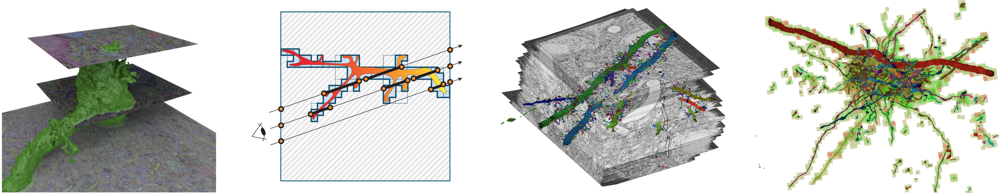
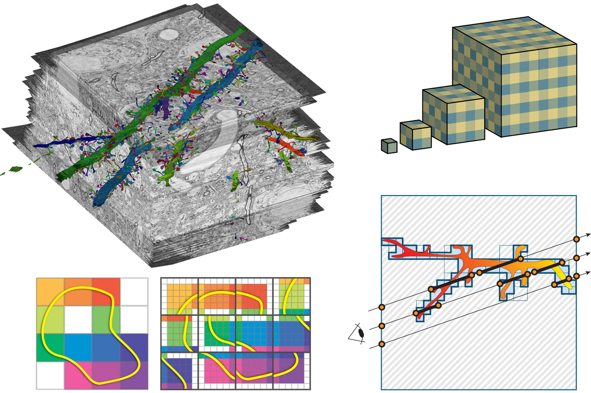
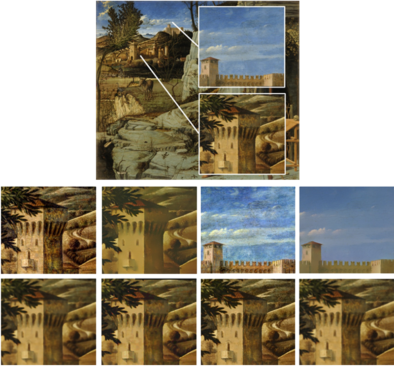
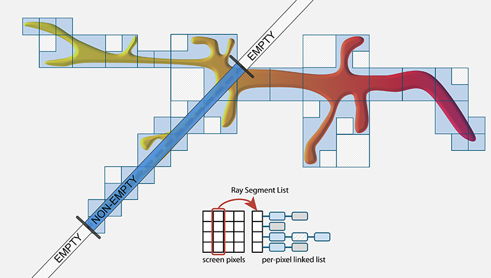

GPU-Based Large-Scale Scientific Visualization
SIGGRAPH Asia 2018 - Course Notes

Date
December 2018Time: TBA
Location: TBA
Course Speakers
Johanna Beyer, Harvard UniversityMarkus Hadwiger, King Abdullah University of Science and Technology
Course Description
Recent advances in image and volume acquisition as well as computational advances in simulation have led to an explosion of the amount of data that must be visualized and analyzed. Modern visualization techniques combine the parallel processing power of GPUs with out-of-core methods and data streaming to enable the interactive exploration of giga- and terabytes of image and volume data. A major enabler for interactivity is making both the computational and the visualization effort proportional to the amount of data that is actually visible on screen, decoupling it from the full data size. This leads to powerful display-aware multi-resolution techniques that enable the visualization of data of almost arbitrary size.Level
IntroductoryIntended Audience
We target researchers and practitioners in visualization and computer graphics that want to learn recent GPU techniques and hardware/API capabilities for implementing visualization systems that scale to very large data. The course will also be interesting for people interested in processing and rendering gigapixel images in a scalable manner.Course Prerequisites
Course participants should have a basic understanding of how GPUs work and how they are programmed using standard graphics APIs such as OpenGL or Direct3D, and a basic understanding of general-purpose GPU programming using CUDA or OpenCL.Syllabus
Introduction, Basics of Scalable Visualization and GPU Virtual Memory Architectures [60 min]
After introducing the course, I will describe GPU-based visualization techniques, focusing on GPU ray-casting for large volume data. We will look at fundamental data structures such as grids and trees, and discuss how to perform traversal on GPUs. We will discuss the basics of rendering large images and volumes using out-of-core approaches, and I will describe the basic ray-casting optimization techniques of empty space skipping and early ray termination with a focus on large data. I will give an overview of virtual texturing on GPUs and how virtual memory hierarchies can be employed for the interactive visualization of data of almost arbitrary size.Speaker
Markus Hadwiger, King Abdullah University of Science and Technologyemail: markus.hadwiger @ kaust.edu.sa
Slides
TBABio
Markus Hadwiger is an Associate Professor in computer science and the Visual Computing Center (VCC) at King Abdullah University of Science and Technology (KAUST) in Saudi Arabia, which he joined in 2009. He leads the High-Performance Visualization research group at VCC, where his research interests include extreme-scale visual computing and visualization, volume visualization, medical visualization, large-scale image and volume processing, multi-resolution techniques, data streaming and out-of-core processing, interactive segmentation, and GPU algorithms and architectures. He is a co-author of the book Real-Time Volume Graphics published in 2006 and has been involved in many courses and tutorials about volume rendering and visualization at ACM SIGGRAPH, ACM SIGGRAPH Asia, IEEE Visualization, and Eurographics.Scalable Volume Visualization Architectures and Applications [45 min]
 I will start by explaining some advanced techniques for large-scale ray-casting, including multi-level page tables for accessing terabyte-sized volumes on the GPU. In the second part of my talk, I will introduce and compare different volume processing architectures for handling large data. Data streaming and on-demand construction of 3D data blocks allows to circumvent expensive pre-processing and allows to process and stream data entirely on-demand, thereby limiting the amount of data that has to be handled to the visible subset on the screen. In the last part of my talk I will present higher-level applications that are built on top of current GPU-based visualization systems for large-scale data. I will present a system for query-guided visual analysis of large volumetric electron microscopy data, built on top of a powerful petascale visualization system.Speaker
Johanna Beyer, Harvard Universityemail: jbeyer @ seas.harvard.edu
Slides
TBABio
Johanna Beyer is a research associate at the Visual Computing Lab at Harvard University. Before joining Harvard, she was a postdoctoral fellow at the Geometric Modeling and Scientific Visualization Center at KAUST. She received her Ph.D. in computer science at the University of Technology Vienna, Austria in 2009. Her research focuses on GPU-based volume rendering techniques for large-scale neuroscience and medical data, with emphasis on visualization of large and multimodal volumes.Display-Aware Visualization and Processing, Multi-Resolution Representations [45 min]
I will give an overview of display-aware techniques for the visualization and processing of gigapixel images and large-scale volume data, where the computational effort is proportional to the actually visible data instead of to the original data size. I will describe multi-resolution data structures that encode the information of high-resolution data in multi-resolution pyramids, e.g., using probability density functions of local pixel or voxel neighborhoods. This enables the accurate visualization of high-resolution data with arbitrary transfer functions at any output resolution.
Speaker
Markus Hadwiger, King Abdullah University of Science and Technologyemail: markus.hadwiger @ kaust.edu.sa
Slides
TBAGPU-Based Ray-Guided Volume Rendering, and Efficient Empty Space Skipping for Large-Scale Volume Rendering [60 min]
 I will give an overview of current GPU-based ray-guided volume rendering algorithms, which have been demonstrated to be the most efficient approaches for interactive volume rendering of large data. Furthermore, I will describe recent extension to these ray-guided strategies, to enable efficient empty space skipping of large datasets containing fine and intricate structures. We will cover recent methods that limit the fragmentation of space that often occurs when skipping empty regions, and present a method that supports dynamic and interactive updates of 'empty' regions. By moving the major cost of empty space skipping out of the ray-casting stage and into the faster hardware rasterization stage, empty space skipping becomes scalable than standard octree empty space skipping approaches. Finally, I will also talk about efficient deterministic and probabilistic data structures that can be used for culling and empty space skipping of large-scale segmentation volumes, and describe a hybrid deterministic and probabilistic scalable culling architecture.Speaker
Johanna Beyer, Harvard Universityemail: jbeyer @ seas.harvard.edu
Slides
TBAOutlook and Summary [15 min]
I will summarize the main concepts that were presented in the earlier sessions, and end by giving an outlook on open challenges and future directions of research for large-scale volume visualization.
Speaker
Markus Hadwiger, King Abdullah University of Science and Technologyemail: markus.hadwiger @ kaust.edu.sa